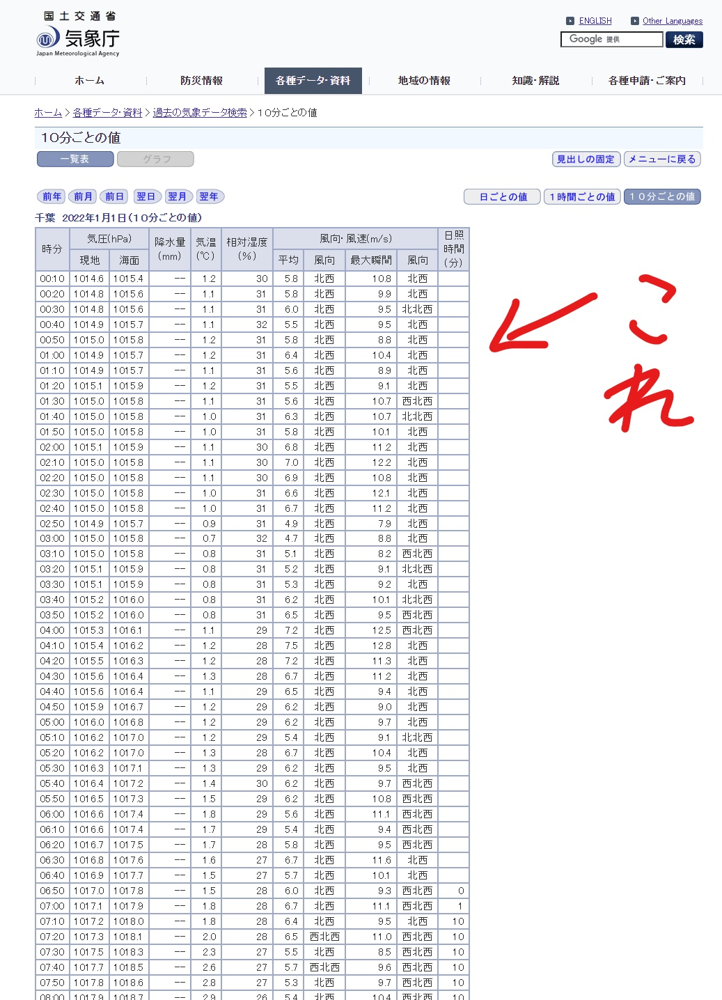
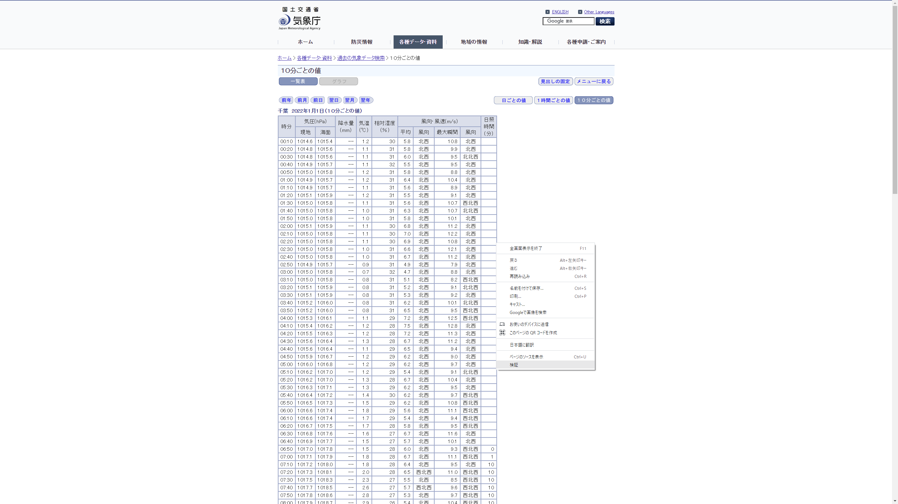
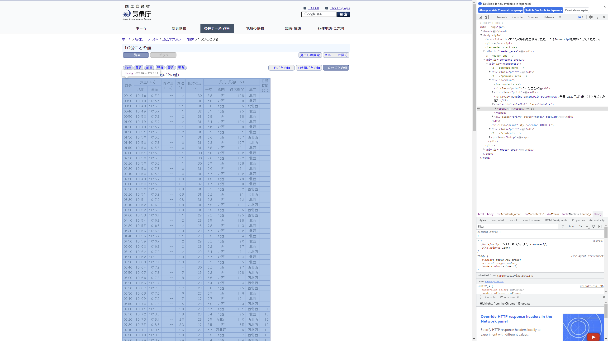

ネット上っていろんなデータが転がってて、「このデータを使って分析したい」みたいなときありますよね。私も競馬のレースデータやディズニーの待ち時間のデータなんかを取ってきたりします。
これのやり方って意外と簡単だから共有してみよって思ったので記事にします。
アクセスを過度に集中させたり、とってきてはいけないデータを勝手にとるのはやめましょう。
ここではwebサイト上の表データをcsvにする方法を紹介します。気象庁のサイトから舞浜の天気を取ってきます。(なぜ千葉なのかは、あのテーマパークがあるからです)
必要なパッケージはrvestパッケージというのを使います。その他使いたいパッケージは読み込んでください。
# 使うパッケージ
library(rvest)
library(tidyverse)## ── Attaching packages ─────────────────────────────────────── tidyverse 1.3.2 ──
## ✔ ggplot2 3.4.0 ✔ purrr 1.0.1
## ✔ tibble 3.2.1 ✔ dplyr 1.1.1
## ✔ tidyr 1.3.0 ✔ stringr 1.5.0
## ✔ readr 2.1.3 ✔ forcats 0.5.2## Warning: パッケージ 'tibble' はバージョン 4.2.3 の R の下で造られました## Warning: パッケージ 'tidyr' はバージョン 4.2.3 の R の下で造られました## Warning: パッケージ 'purrr' はバージョン 4.2.3 の R の下で造られました## Warning: パッケージ 'dplyr' はバージョン 4.2.3 の R の下で造られました## ── Conflicts ────────────────────────────────────────── tidyverse_conflicts() ──
## ✖ dplyr::filter() masks stats::filter()
## ✖ readr::guess_encoding() masks rvest::guess_encoding()
## ✖ dplyr::lag() masks stats::lag()今回は気象庁のサイトから舞浜の天気を取ってこようと思います。
以下がサイトURL(2022年1月1日 千葉 10分ごとの天気)
- 気象庁
ここにある表を1年分取ってくるのが目的です。 
このサイトのURLを変数に入れ、read_html関数で読み込みます
url <- "https://www.data.jma.go.jp/obd/stats/etrn/view/10min_s1.php?prec_no=45&block_no=47682&year=2022&month=1&day=1&view="
url_res <- read_html(url)
url_res## {html_document}
## <html lang="ja">
## [1] <head>\n<meta http-equiv="Content-Type" content="text/html; charset=UTF-8 ...
## [2] <body>\n<noscript><div>すべての機能をご利用いただくにはJavascriptを有効にしてください。</div></noscr ...そしたら、しっかり読み込めているか確認するためサイトのタイトルを表示してみましょう。方法は2通りあります。サイトのcssから探す方法とxpathから探す方法です。どのサイトでも基本的には 下のコピペで表示できます。xpathに関しては表を取ってくるうえで重要になるので後述します。
url_title <- html_nodes(url_res, css = "html>head>title")
url_title## {xml_nodeset (0)}url_title <- html_nodes(url_res, xpath = "/html/head/title")
url_title## {xml_nodeset (1)}
## [1] <title>気象庁｜過去の気象データ検索</title>\n無事、タイトルである「気象庁｜過去の気象データ検索」が表示されたのでサイトの読み込みと確認ができました。
いよいよ、表を取得します。まず、サイトにアクセスして表の上で右クリックをしてください。一番下に検証と出てくるのでクリックします。

すると右側にサイトのHTMLが出てきました。カーソルを移動させるとどの部分を表しているのかわかるので、この中から持ってきたい表が青く光る部分を探します。 
見つけたら右クリックを押して、「Copy → Copy Xpath」を押してXpathをコピーしてください。
さあ実際にサイトの表を取ってみます。 表を取得する際は、htmlをread_html関数で読み込んで、取得したXpathをhtml_node関数に与えて、html_table関数で表として取得します。
一旦やってみましょう。
tiba_1_1_wether <- read_html(url) %>%
html_node(xpath = "//*[@id="tablefix1"]") %>%
html_table()## Error: <text>:2:31: 想定外のシンボルです
## 1: tiba_1_1_wether <- read_html(url) %>%
## 2: html_node(xpath = "//*[@id="tablefix1
## ^うまくできませんでした。これはXpathに「“」がいくつも含まれてしまっているため、R側がどこまでが文字列かわからないために起こります。
このようなときはエスケープ文字と呼ばれる文字を使います。Rでは「\」が使われ、Xpathないに含まれる「”」の直前に「\“」と入れることで後ろの「”」が文字列の認識に使われることを回避します。
それを踏まえてXpathの”の直前に\をいれてやってみます。(Markdown形式にすると￥に変換されるっぽいのでコード内の表記が変わってますが「\」を入れてます)
tiba_1_1_wether <- read_html(url) %>%
html_node(xpath = "//*[@id=\"tablefix1\"]") %>%
html_table()これでエラーは消えました。取ってこれたか確認します。
head(tiba_1_1_wether) #上5行を表示| 時分 | 気圧(hPa) | 気圧(hPa) | 降水量(mm) | 気温(℃) | 相対湿度(％) | 風向・風速(m/s) | 風向・風速(m/s) | 風向・風速(m/s) | 風向・風速(m/s) | 日照時間(分) |
|---|---|---|---|---|---|---|---|---|---|---|
| 時分 | 現地 | 海面 | 降水量(mm) | 気温(℃) | 相対湿度(％) | 平均 | 風向 | 最大瞬間 | 風向 | 日照時間(分) |
| 00:10 | 1014.6 | 1015.4 | – | 1.2 | 30 | 5.8 | 北西 | 10.8 | 北西 | |
| 00:20 | 1014.8 | 1015.6 | – | 1.1 | 31 | 5.8 | 北西 | 9.9 | 北西 | |
| 00:30 | 1014.8 | 1015.6 | – | 1.1 | 31 | 6.0 | 北西 | 9.5 | 北北西 | |
| 00:40 | 1014.9 | 1015.7 | – | 1.1 | 32 | 5.5 | 北西 | 9.5 | 北西 | |
| 00:50 | 1015.0 | 1015.8 | – | 1.2 | 31 | 5.8 | 北西 | 8.8 | 北西 |
このような感じで取ってこれます。
webサイトから表を取ってくる方法をお伝えしましたが、目標は1年間分の天気でした。1日ずつやっていては日が暮れてしまいます。
それでは間違い探しです。下が2022年1月1日のURL https://www.data.jma.go.jp/obd/stats/etrn/view/10min_s1.php?prec_no=45&block_no=47682&year=2022&month=1&day=1&view=
これが2022年1月2日のURL https://www.data.jma.go.jp/obd/stats/etrn/view/10min_s1.php?prec_no=45&block_no=47682&year=2022&month=1&day=2&view=
さあどこが違うでしょう…。後ろの方のday=が1から2に代わっていますね。
ということはfor文を使って、「URLを作る→ 表を取ってくる→ 表をくっ付ける」とやれば1年間のデータを取ってこれそうです。
ということで下のようなコードを書いてみました。
urls <- NULL
wether_2022 <- NULL
base_url <- "https://www.data.jma.go.jp/obd/stats/etrn/view/10min_s1.php?prec_no=45&block_no=47682&year=2022&month=" # 取りたいデータがあるURLの一部
base_url2 <- "&day=" # 同じく一部
base_url3 <- "&view=" # 同じく一部
last_day <- c(31,28,31,30,31,30,31,31,30,31,30,31) # 1か月が何日かを入れたベクトル
for (m in 1:12) { # 月
for (d in 1:last_day[m]) { # 日
if (m < 10) {
month <- paste0("0",m) # 日付を入れるための操作-----------------
} else {
month <- as.character(m)
}
if (d < 10) {
day <- paste0("0",d)
} else {
day <- as.character(d)
}
date <- as.numeric(paste0("2022", month, day))
#------------------------------ここまで
urls <- paste0(base_url, m, base_url2, d, base_url3) # URL作成
day_wether <- read_html(urls) %>% # 表の取得
html_node(xpath = "//*[@id=\"tablefix1\"]") %>%
html_table()
day_wether$date <- c(rep(date,145)) # 表の最後の列に日付のデータを追加
wether_day_with_year <- day_wether[2:145,] # 一行目はいらないのでカット
wether_2022 <- rbind(wether_2022, wether_day_with_year) # 取得した表を1月1日からくっ付けていく
Sys.sleep(1) #アクセスを短時間で大量にしないように1秒間停止
}
}ポイントは月ごとに異なる日付への対応とURLの作成方法です。また特に重要なのはシステムの一時停止にSys.sleepを使っている点です。これがないとサーバーに一気に負荷をかけることになるので迷惑なうえに、アクセスが多すぎてサイバー攻撃とみなされ一定時間アクセスをブロックされる可能性があります。
wether_2022に1年分の天気データを入れられたので保存して中身を確認してみます。
write.csv(wether_2022,"wether_2022_10min.csv")
head(wether_2022) #上5行を表示 2022年01月01日00時00分～| 時分 | 気圧(hPa) | 気圧(hPa) | 降水量(mm) | 気温(℃) | 相対湿度(％) | 風向・風速(m/s) | 風向・風速(m/s) | 風向・風速(m/s) | 風向・風速(m/s) | 日照時間(分) | date |
|---|---|---|---|---|---|---|---|---|---|---|---|
| 00:10 | 1014.6 | 1015.4 | – | 1.2 | 30 | 5.8 | 北西 | 10.8 | 北西 | 20220101 | |
| 00:20 | 1014.8 | 1015.6 | – | 1.1 | 31 | 5.8 | 北西 | 9.9 | 北西 | 20220101 | |
| 00:30 | 1014.8 | 1015.6 | – | 1.1 | 31 | 6.0 | 北西 | 9.5 | 北北西 | 20220101 | |
| 00:40 | 1014.9 | 1015.7 | – | 1.1 | 32 | 5.5 | 北西 | 9.5 | 北西 | 20220101 | |
| 00:50 | 1015.0 | 1015.8 | – | 1.2 | 31 | 5.8 | 北西 | 8.8 | 北西 | 20220101 | |
| 01:00 | 1014.9 | 1015.7 | – | 1.2 | 31 | 6.4 | 北西 | 10.4 | 北西 | 20220101 |
tail(wether_2022) #下5行を表示 ～202212月31日24時00分| 時分 | 気圧(hPa) | 気圧(hPa) | 降水量(mm) | 気温(℃) | 相対湿度(％) | 風向・風速(m/s) | 風向・風速(m/s) | 風向・風速(m/s) | 風向・風速(m/s) | 日照時間(分) | date |
|---|---|---|---|---|---|---|---|---|---|---|---|
| 23:10 | 1020.5 | 1021.3 | – | 4.1 | 83 | 0.8 | 南東 | 1.1 | 南東 | 20221231 | |
| 23:20 | 1020.5 | 1021.3 | – | 4.5 | 79 | 0.6 | 東 | 0.7 | 東 | 20221231 | |
| 23:30 | 1020.4 | 1021.2 | – | 4.3 | 82 | 0.7 | 東北東 | 0.9 | 北東 | 20221231 | |
| 23:40 | 1020.5 | 1021.3 | – | 3.9 | 83 | 0.6 | 北東 | 0.9 | 北東 | 20221231 | |
| 23:50 | 1020.4 | 1021.2 | – | 3.7 | 83 | 0.6 | 北北東 | 0.8 | 北東 | 20221231 | |
| 24:00 | 1020.4 | 1021.2 | – | 3.6 | 84 | 1.0 | 北北西 | 1.5 | 北西 | 20221231 |
こんな感じで10分ごとに1年分の千葉の天気データを取ってこれました(ディズニーランドのアトラクション待ち時間予測の変数に使うよ)。
コードを書くところはURLの変化の仕方や表の形が変化するので都度書き直す必要はありますが、やり方さえ知っておけばできるのでおすすめです。実際データがないと始まらないことも多いので結構重宝しています。